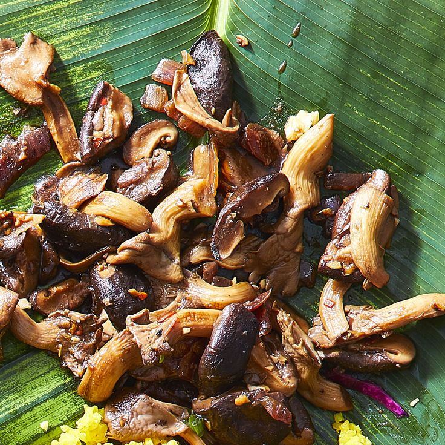

Mushroom Sisig

Mushroom Sisig from the Philippines
It's a vegan replacement for the renowned Filipino Pork Sisig
Sisig (SEE-sig) is traditionally made with chopped pig's face and served on a sizzling hot platter.
The mushrooms here mimic the chewy-meaty quality of pork and don't take nearly as long to prepare.
You still get all the salty, tangy, and spicy flavors. And no face gets chopped!
Ingredients
- 8 cloves Garlic
- 2 Green onions
- 1 lb Oyster mushrooms,fresh
- 1 cup Red onion
- 1 lb Shiitake mushrooms,fresh
- 4 Thai chili peppers
Condiments
- 3 tbsp Avocado oil mayonnaise
- 1/2 cup Soy sauce
- 0.5 cup calamansi (Philippine lime) juice
Steps
- Heat oil in a wok or large skillet over medium-high heat.
- Add onion, garlic, and white parts of green onions; cook and stir until softened, about 3 minutes
- Stir in chiles and mushrooms; cook, stirring, until tender and excess liquid evaporates, 5 to 8 minutes.
- Add soy sauce and calamansi juice; cook, stirring, until reduced to a glaze consistency, 5 to 7 minutes.
- Taste and add more soy sauce or calamansi juice to reach desired tanginess and saltiness.
- Serve hot with a dollop of avocado oil mayonnaise and a sprinkle of the green parts of green onions.